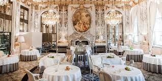
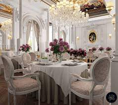

 Founded in 1889, La Maison Étoilée began as a modest bistro in the heart of Paris. The vision of its founder, Jacques Delacroix, was to create a dining experience that transcended the ordinary, offering exquisite cuisine in an ambiance of elegance and sophistication. Jacques, a passionate chef trained in the culinary arts of France, brought his dream to life with meticulous attention to detail in every aspect, from the menu to the décor. The mid-20th century marked the golden era of La Maison Étoilée. Under the stewardship of Jacques' son, Pierre Delacroix, the restaurant underwent a significant transformation. Pierre introduced innovative dishes that blended traditional French techniques with contemporary flavors, attracting gourmands from around the world. The restaurant expanded its wine cellar, curating an extensive collection of rare and exquisite vintages. By the late 1960s, La Maison Étoilée boasted three Michelin stars, solidifying its status as one of the world's premier dining establishments.
 La Maison Étoilée has established itself as a beacon of culinary excellence, earning widespread acclaim and prestigious awards that underscore its standing among the world's finest restaurants. Since its inception in 1889, the restaurant has been recognized by esteemed institutions such as the Michelin Guide, where it has consistently maintained multiple Michelin stars. These accolades highlight La Maison Étoilée's unwavering dedication to crafting exceptional cuisine using the finest ingredients sourced locally and internationally. Beyond its culinary prowess, the restaurant's awards also celebrate its impeccable service, elegant ambiance, and the innovative flair introduced by successive generations of the Delacroix family. La Maison Étoilée's recognition reflects not only its historical significance but also its ongoing commitment to pushing the boundaries of French gastronomy while preserving its rich heritage.
Nestled in the heart of Paris, where the bustling streets echo with the whispers of history, La Maison Étoilée stands as a testament to culinary artistry and timeless elegance. Since its inception in 1889, our restaurant has been a beacon of French gastronomy, enchanting guests with a blend of tradition, innovation, and unwavering dedication to excellence. Step into La Maison Étoilée and embark on a sensory journey unlike any other. As you cross the threshold, the air is infused with the tantalizing aromas of dishes meticulously prepared by our passionate chefs. Each creation is a masterpiece, crafted with the finest locally sourced ingredients and inspired by the rich culinary heritage of France. Our commitment to perfection extends beyond the plate. At La Maison Étoilée, hospitality is an art form. From the warm greeting at the door to the attentive service throughout your meal, every moment is designed to ensure your comfort and delight. Our knowledgeable sommeliers are on hand to guide you through our extensive wine cellar, offering pairings that elevate your dining experience to new heights. Indulge in the ambiance of our dining rooms, where classic elegance meets modern sophistication. Whether you're celebrating a special occasion, enjoying an intimate dinner for two, or hosting a gathering of friends and family, La Maison Étoilée provides a setting that is both luxurious and inviting. As we continue to write our story, each chapter unfolds with accolades and honors from prestigious institutions such as the Michelin Guide, recognizing our dedication to culinary excellence. These awards are a testament to our relentless pursuit of perfection and our commitment to surpassing expectations with every dish served. Join us at La Maison Étoilée and experience the magic of French cuisine reimagined for the modern palate. Whether you're a connoisseur of fine dining or discovering our flavors for the first time, we invite you to savor the symphony of tastes, textures, and emotions that await you in our historic dining rooms. Welcome to La Maison Étoilée, where every meal is an unforgettable journey through the art of gastronomy